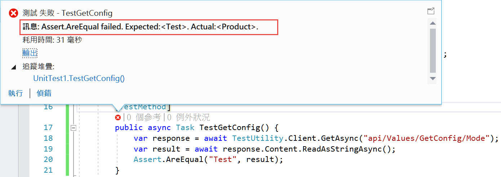
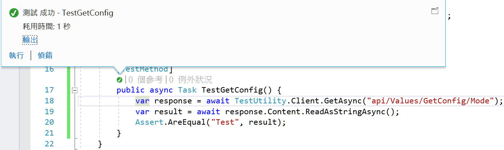

延續上一篇，這篇來談談客製化測試環境。
當我們整合測試的時候，必定不會用正式環境的DB來測試，所以至少要改變連線字串，
客製化測試環境最常用到的就是載入不一樣的appsettings.json檔案。
針對這個部分，我們可以使用WithWebHostBuilder來修改設定，
我們可以這樣寫
1
2
3
4
5
6
7
8
9
| [AssemblyInitialize]
public static void Initialize(TestContext testContext) {
Factory = new WebApplicationFactory<Startup>();
Client = Factory.WithWebHostBuilder(builder => {
builder.ConfigureAppConfiguration((context, configure) => {
configure.AddJsonFile("appsettings.test.json");
});
}).CreateClient();
}
|
這會載入appsettings.test.json檔案，不過卻會是從主要專案來尋找appsettings.test.json
變成主要專案必須關心測試專案的設定，
較好的方式是把設定檔寫在測試專案，並由測試專案載入，
因此我們必須改變路徑。
改寫如下
1
2
3
4
5
6
7
8
9
10
11
12
13
14
15
| [AssemblyInitialize]
public static void Initialize(TestContext testContext) {
Factory = new WebApplicationFactory<Startup>();
Client = Factory.WithWebHostBuilder(builder => {
builder.ConfigureAppConfiguration((context, configure) => {
builder.UseSolutionRelativeContentRoot("./", "*.csproj");
var testBuilder = new ConfigurationBuilder()
.SetBasePath(builder.GetSetting(WebHostDefaults.ContentRootKey))
.AddJsonFile("appsettings.test.json", optional: false, reloadOnChange: true);
var TestConfiguration = testBuilder.Build();
configure.AddConfiguration(TestConfiguration);
});
}).CreateClient();
}
|
第6行是設定內容的根目錄到與測試專案的專案檔所在位置相同，
同時會把路徑放到KEY為WebHostDefaults.ContentRootKey的字典內。
第7行是建立新的ConfigurationBuilder，
第8行將設定路徑，
第9行載入測試專案的appsettings.test.json
第10行建立新的IConfigurationRoot，
第12行把新建立的IConfigurationRoot加到目前的設定裡。
設定檔如果欄位相同，後加入的會蓋掉先加入的，所以有為了測試而改變的設定都可以寫在appsettings.test.json內。
讓我們試試看結果。
正式專案內的appsettings.json內容如下
1
2
3
4
5
6
7
8
9
| {
"Logging": {
"LogLevel": {
"Default": "Warning"
}
},
"Mode": "Product",
"AllowedHosts": "*"
}
|
然後我們在ValueController增加一個method，用來取得設定檔內容
1
2
3
4
| [HttpGet("GetConfig/{key}")]
public string GetConfig(string key, [FromServices]IConfiguration conf) {
return conf.GetValue<string>(key);
}
|
在測試專案加上一個新測試
1
2
3
4
5
6
| [TestMethod]
public async Task TestGetConfig() {
var response = await TestUtility.Client.GetAsync("api/Values/GetConfig/Mode");
var result = await response.Content.ReadAsStringAsync();
Assert.AreEqual("Test", result);
}
|
目前在沒有使用客製化設定之前，這個測試是不會通過的，
因為Mode屬性的值是正式專案裡的appsettings.json定義的Product

在測試專案新增appsetting.test.json，內容如下
然後在次測試

這次就抓到測試專案的設定了。